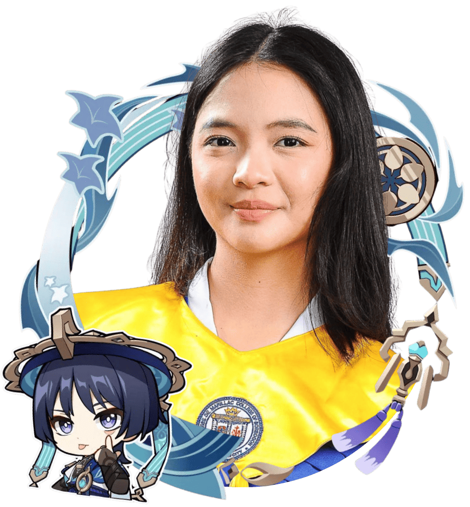
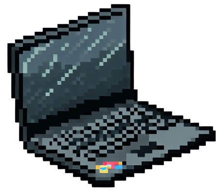

![]()
Welcome to my personal webpage! Here, you'll find a glimpse into my life, interests, and aspirations. I hope you enjoy exploring and getting to know me better.
Hello
- Name: Trixie Marina L. Yoingco
- Year and Bloc: BSCS 1A
If confused but curious was a person.

About
Hello! My name is Trixie Marina L. Yoingco. I am a first-year BSCS student at Bicol University. I dabble in art and video games-lots and lots of video games. I’ve grown up with the storm8 games, my shayla girlsgogames.com, to now getting to play Minecraft, Valorant, and much much more. It’s absolutely intriguing that I ended up in my program, since now I have the opportunity to not only be on the user’s end of gaming, but also the creator’s.
I spend a lot of time watching YouTube videos and calling with friends! Both are really huge influences on me, and being able to talk, laugh, play with, and make fun of my closest circle is one of the things that has kept me going through my academic journey. They really remind me that "no man is an island."
In the past I also used to watch anime, read manhwa, manga, the occasional fanfiction, do art commissions, and stream. Was I good? Goodness no. But everything was fun nonetheless.
My Hobbies
- Art
- Playing video games
- Watching YouTube

My Path into Computing
How did I even pick this program in the first place? I honestly have always thought I’d end up in medicine. But after meeting my 10th grade Computer teacher, I steered a hard right into Computer Science. Fun fact: she was also a BSCS student at BU!
To be fair, I
I'm glad that it cleared out and I will probably have the opportunity to work on cool projects with my closest friends--of whom will also be taking Computer Science!
I hope to learn a lot about designing software, UX/UI, and especially about programming project management.
Favorites and Skills
My Favorites
| Category | Favorite |
|---|---|
| Food | SINIGAAAAAAAANG!! |
| Art | RinoTuna, iara.png, orenjikun, ccroquette |
| Video Games | Valorant, Minecraft, Roblox, Honkai Star Rail, Genshin Impact, Morimens, Don't Starve Together, Star Dew Valley |
| Reading | Manhwa, Manga, Fantasy or Mystery Novels |
| Music | Basically anything depending on my mood |
| Learning | Art, Programming and Science |
Skills I'm Developing
- Writing basic programs in C
- Creating webpages using HTML and CSS
- Problem-solving
- Illustrating
- Graphics Design
- Time Management (im failing)
- Intermediate fluency in Tagalog
One website I enjoy visiting is Pinterest because it always give me references and inspiration for basically anything from drawing to pubmats to Minecraft builds to. Whenever I'm low on my creative juices, it always finds a way to make me want to create.
Goals
In the next few years, I hope to...
- Become proficient at programming
- Figure out what computing field I'll go into
- Maintain good grades
- Become more confident in programming and in presenting myself
Reflection
I've said this before and I'll say it again. This activity made me gain more and more respect for UX/UI designers and web dev hobbyists. There was so much to consider beyond just making a good layout, which is already an entire skill on its own. Webpage responsiveness never crossed my mind till now and the fact that they are able to make good designs that are also compatible to all devices and window sizes is crazy. I realized that there is so much under the hood that we don't know about that gets considered by every developer and designer--be it in software, wed dev, product dev, or not. They put so much effort into making our experience as frictionless as possible even in the smallest of things.